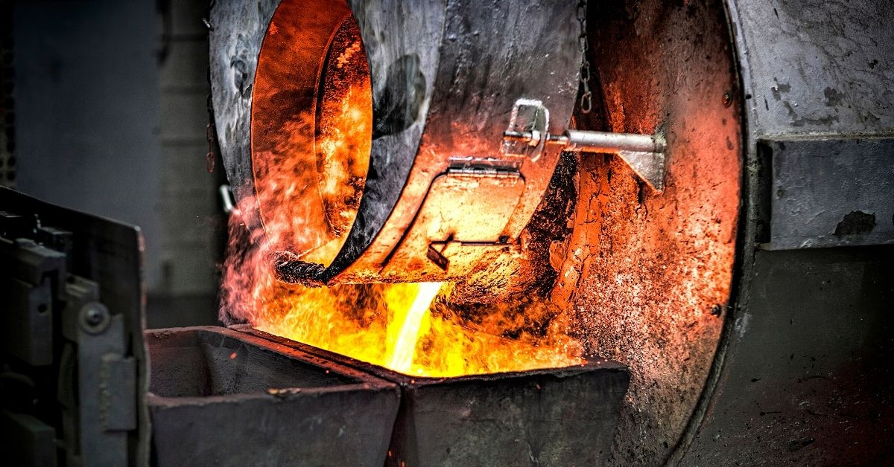
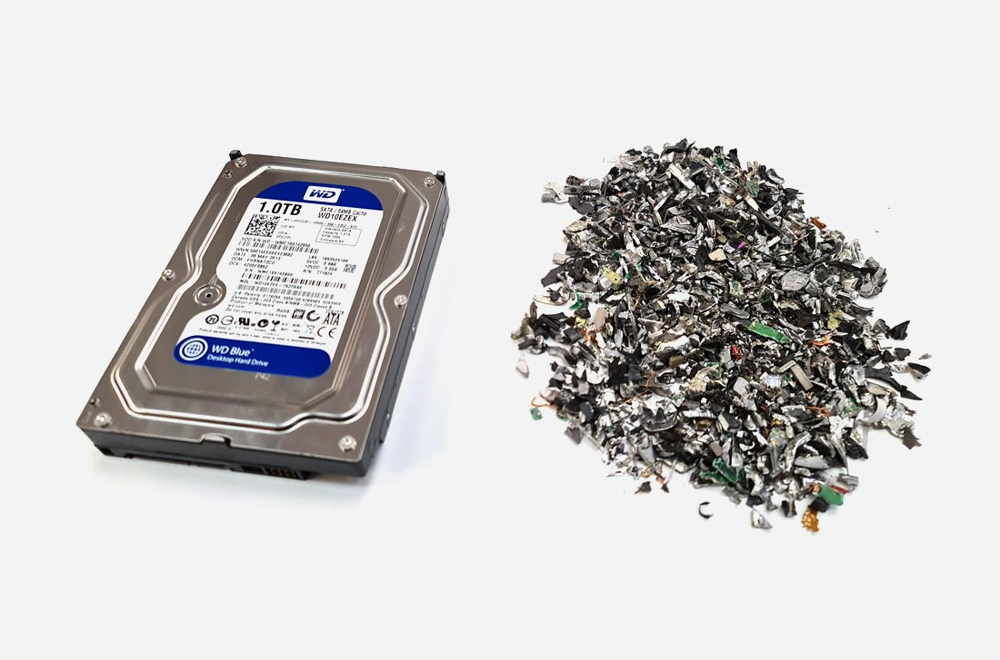
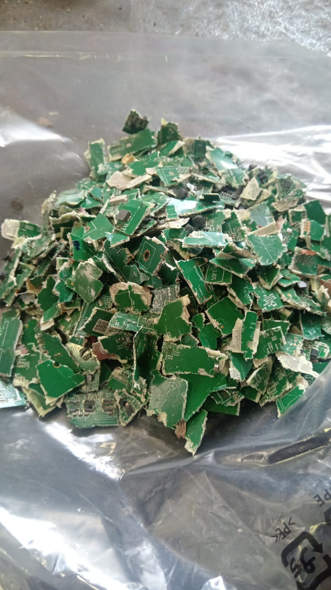

Precious Metal Refining



CWM is the only precious metal refinery in Sri Lanka and is located at the Katunayake Export Processing Zone. CWM extracts precious metals including gold, silver, platinum, copper, and palladium.
CWM provides a close-loop e-waste recycling solution in Sri Lanka. Our goal is to recycle 50% of locally generated e-waste by 2025.
Precious metal extraction via recycling saves a large amount of carbon dioxide emission when compared with virgin metal mining.
Precious metal extraction follows a sophisticated procedure that requires the intervention of a professional metal refiner. As a single-source precious metal refinery in the country, CWM has the resources and experience to extract 69 elements from the periodic table, via the e-waste recycling process.
